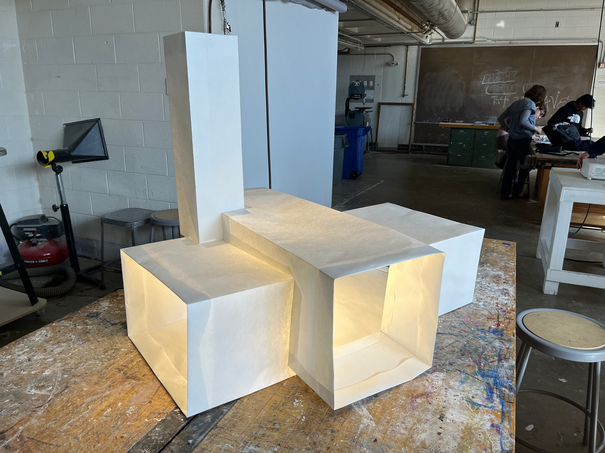

Overview
Tunnels of Light is a large-scale paper sculpture measuring approximately 4×5×4 feet, constructed from a single sheet of 20×5 foot paper. The work consists of three rectangular volumes that converge at a central point, each aligned to the X, Y, and Z axes. These forms were achieved through careful folding and precision gluing at the endpoints and intersections, allowing the entire structure to support itself without armature.
The open ends of the prisms create three directional “tunnels,” through which a central light source projects outward. When illuminated, the sculpture becomes a luminous apparatus: light diffuses across the paper’s surface while concentrated beams emerge from each axis, extending the geometry into the surrounding space. In darkness, the effect evokes both architectural windows and optical instruments— part lantern, part spatial drawing.
Visually, Tunnels of Light draws from modern minimalist collage traditions, particularly the layered compositional logic found in Frank Lloyd Wright’s stained glass designs. By reducing form to essential planes and intersections, the piece transforms a single sheet of paper into an expressive spatial object, inviting viewers to consider how structure, material, and light can collaborate to construct a unified atmosphere.


Click image to view gallery